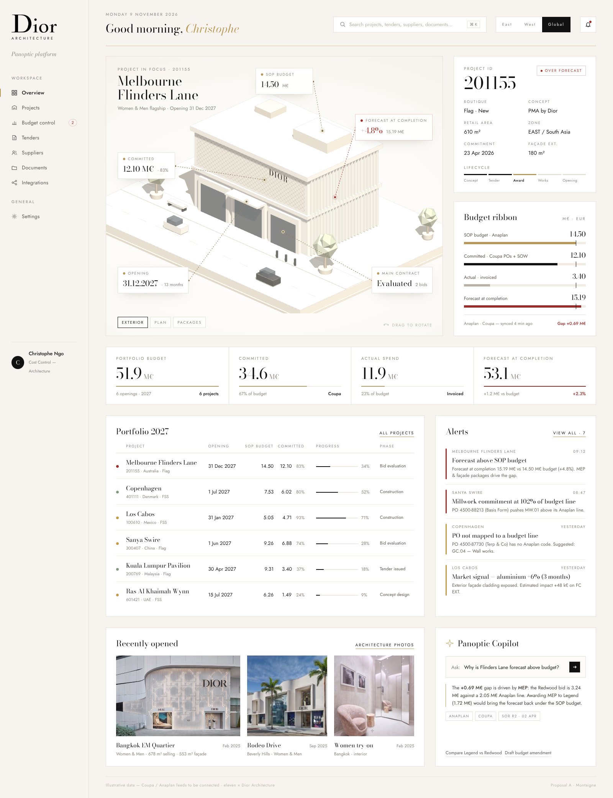
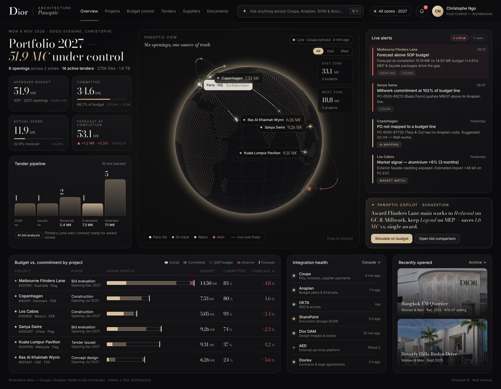
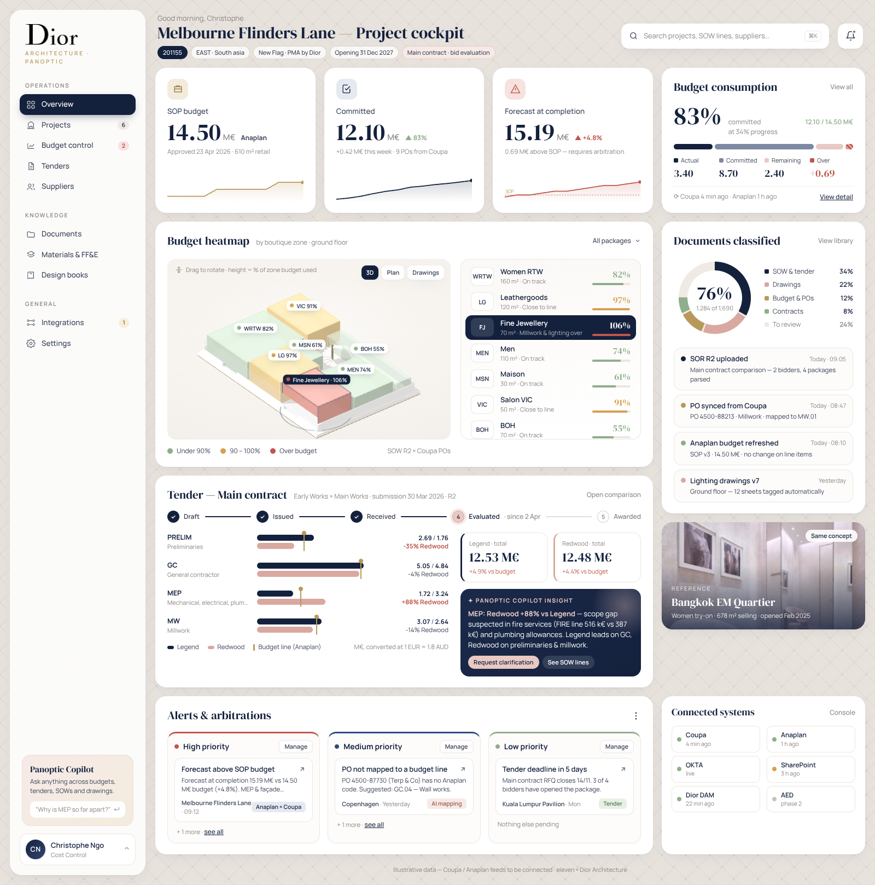
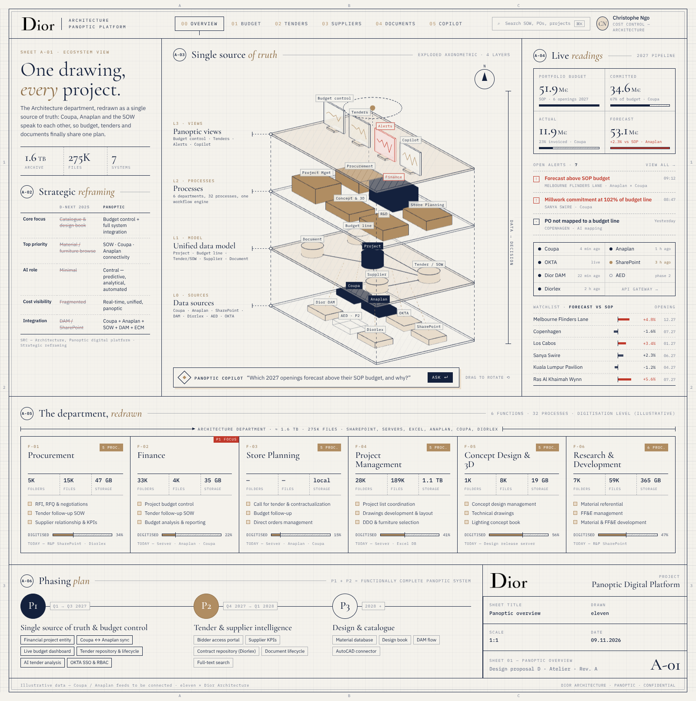
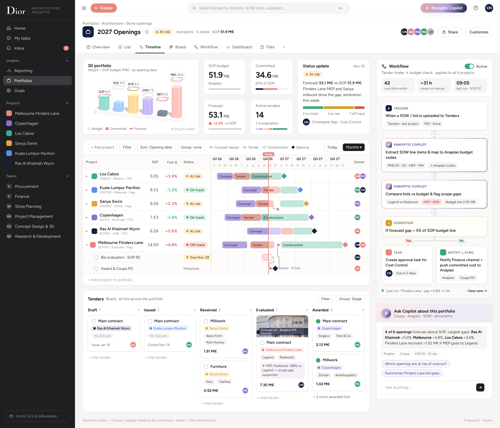

Plateforme panoptique — pistes de design
eleven × Dior Architecture · 9 novembre 2026 · document de travail
Cinq directions, un même socle
Chaque piste est une maquette navigable de l’écran d’accueil, construite sur le même jeu de données (projets 2027 du fichier ADMIN FOLLOW UP, appel d’offres Main Contract de Melbourne Flinders Lane, systèmes Coupa / Anaplan / SharePoint / DAM / Diorlex / AED / OKTA). Elles diffèrent par l’angle d’entrée et l’univers visuel. Toutes intègrent un élément 3D interactif (glisser pour tourner).
Les pistes

Montaigne
Éditorial ivoire, l’élégance d’un lookbook appliquée au pilotage.
Angle d’entrée
- Le projet d’abord : une boutique en 3D isométrique, avec ses chiffres clés accrochés au bâtiment.
- Portefeuille 2027, alertes et dernières ouvertures (photos) en dessous.
Forces
- La plus « Dior » : serif Bodoni, filets or, beaucoup d’air.
- Très lisible pour un public direction / CODIR.
Points d’attention
- Moins dense : à compléter par des vues tableaux pour Finance et Achats.

Nuit Avenue
Salle de contrôle couture : noir, champagne, verre.
Angle d’entrée
- Le portefeuille mondial : globe 3D, projets épinglés et reliés à Paris, alertes en rouge.
- KPI consolidés, flux d’alertes, santé des connecteurs, entonnoir des appels d’offres.
Forces
- Incarne le mot « panoptique » : tout voir, partout, en temps réel.
- Très fort en démonstration et en comité.
Points d’attention
- Le mode sombre fatigue sur une journée de travail sur tableaux : prévoir un mode clair.

Cannage
SaaS moderne et doux, gris Dior, rose et marine, motif cannage.
Angle d’entrée
- Le cockpit projet : KPI, consommation budgétaire, plan 3D extrudé coloré par zone (heatmap budget).
- Appel d’offres Legend vs Redwood par lot, alertes par priorité, fil d’activité.
Forces
- La plus proche de la référence Atriolee : ergonomie familière, dense et rassurante.
- La plus directement transposable en application.
Points d’attention
- Plus « produit » que « maison » : la touche Dior repose sur la palette et le cannage.

Atelier
Le langage du plan d’architecte : papier calque, encre marine, cartouche.
Angle d’entrée
- L’écosystème : axonométrie éclatée 3D des couches (sources → modèle de données → process des 6 pôles → vues panoptiques).
- Reprise de la cartographie du département (1,6 To, 275K fichiers), du recadrage stratégique et de la roadmap P1-P3.
Forces
- Parle le langage des architectes ; explique la « source unique de vérité ».
- Idéale comme page d’accueil de la plateforme ou support de cadrage.
Points d’attention
- Plus explicative qu’opérationnelle : à associer à une vue de pilotage.

Studio
L’ergonomie d’un outil de gestion de travail moderne, dans les couleurs Dior.
Angle d’entrée
- Le pilotage du portefeuille 2027 : timeline des projets (conception, appel d’offres, travaux, ouverture) avec budget et écart en colonnes.
- Constructeur de workflows avec étapes Copilot : dépôt d’un SOW → extraction des lignes → comparaison au budget Anaplan → validation ou notification.
- Tableau des appels d’offres par étape et mini-vue 3D du portefeuille.
Forces
- Rend visibles les process et l’automatisation IA, au cœur du recadrage.
- Ergonomie familière, adoption rapide par les équipes et les externes.
Points d’attention
- Univers plus « outil » que « maison » : la marque passe par la palette rose et marine.
Comparaison
| A · Montaigne | B · Nuit Avenue | C · Cannage | D · Atelier | E · Studio | |
|---|---|---|---|---|---|
| Niveau de vue | Projet | Portefeuille mondial | Projet (opérationnel) | Écosystème / process | Portefeuille & process |
| Élément 3D | Boutique isométrique + étiquettes KPI | Globe des projets | Plan extrudé, heatmap budget | Axonométrie des couches de données | Colonnes 3D du portefeuille |
| Public cible | Direction Architecture | CODIR, comités | Finance, Cost control, PM | Tous, onboarding, cadrage | Équipes projet, externes |
| Densité d’information | Faible à moyenne | Moyenne | Élevée | Moyenne | Élevée |
| Univers Dior | ●●●● | ●●● | ●● | ●●● | ●● |
| Modernité | ●●● | ●●●● | ●●●● | ●●● | ●●●● |
Notre recommandation
Une base C (Cannage) pour l’application de travail, la plus dense et la plus proche de l’usage quotidien de Finance et du Cost control, habillée de la typographie et des filets or de A (Montaigne).
Le globe de B devient la page « Portefeuille » pour la direction, et l’axonométrie de D la page « Écosystème & intégrations ». Les quatre 3D trouvent ainsi leur place dans un seul produit.
Le constructeur de workflows de E peut s’ajouter comme module « Automatisations » : c’est là que l’IA (extraction des SOW, alertes, rapprochement Coupa / Anaplan) devient visible et paramétrable par les équipes.
Prochaines étapes
- Choix de la piste (ou du mix) et retours sur les couleurs, la typographie et le niveau de densité.
- Développement de l’application cliquable sur la piste retenue : Accueil, Portefeuille, Projet, Budget control, Tenders (comparaison des offres), Fournisseurs, Documents, Intégrations, Copilot.
- Branchement de données réelles anonymisées (export ADMIN FOLLOW UP, SOR des appels d’offres) en remplacement des données illustratives.
Sources : cadrage 20260615_AI_TRANSFORMATION-ARCHITECTURE.xlsx (onglets D-NEXT 2025, 2026 AI, SYSTEM), slides « Strategic reframing » et « Architecture department overview », captures de l’atelier du 09/11/2026. Photos de boutiques extraites des captures (Bangkok EM Quartier, Rodeo Drive). Les montants engagés, réels, prévisionnels et les alertes sont illustratifs.